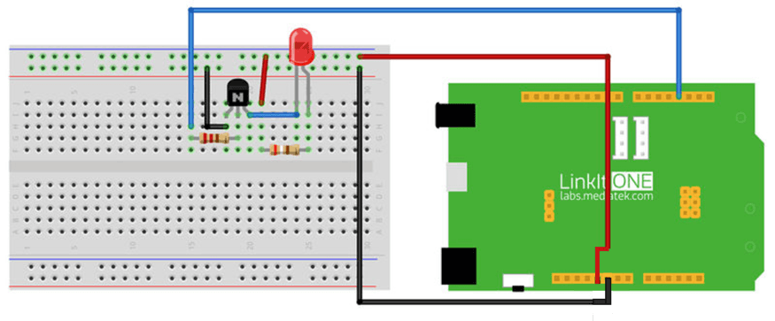

What We're Doing
In the previous section we've got an insight about how to control an LED with electronic components but lets do some gimmicks with software for automatic control of the LED. You just have to upload the code that is available in this section. The code written initially switches ON the LED, after a delay of 3sec it switches it OFF. Let's start using the LinkIt board.
Things you need
Schematic

Connection

Code
Please click on the button below to download the code for the kit:

You can unzip the file to the Examples folder of your Arduino IDE.
To access the demo code open:
File -> Examples -> Starter Kit for LinkIt -> Basic -> L2_Control_LED
const int pinLED = 3; // LED connect to D13 void setup() { pinMode(pinLED, OUTPUT); // set direction of D13-OUTPUT } void loop() { digitalWrite(pinLED, HIGH); // LED on delay(3000); digitalWrite(pinLED, LOW); // LED off delay(100); }
Troubleshooting
Making it better
In the previous section we used a capacitor to grow the brightness of the LED slowly and fade its luminosity slowly. Lets do the same thing without the capacitor but by purely changing the code.
To open the demo code：
File -> Examples -> Starter Kit for LinkIt -> Extend_Lesson –> L2_Breath_LED
More ideas
How do you change the frequency of the LED by modifying the code?
Reference